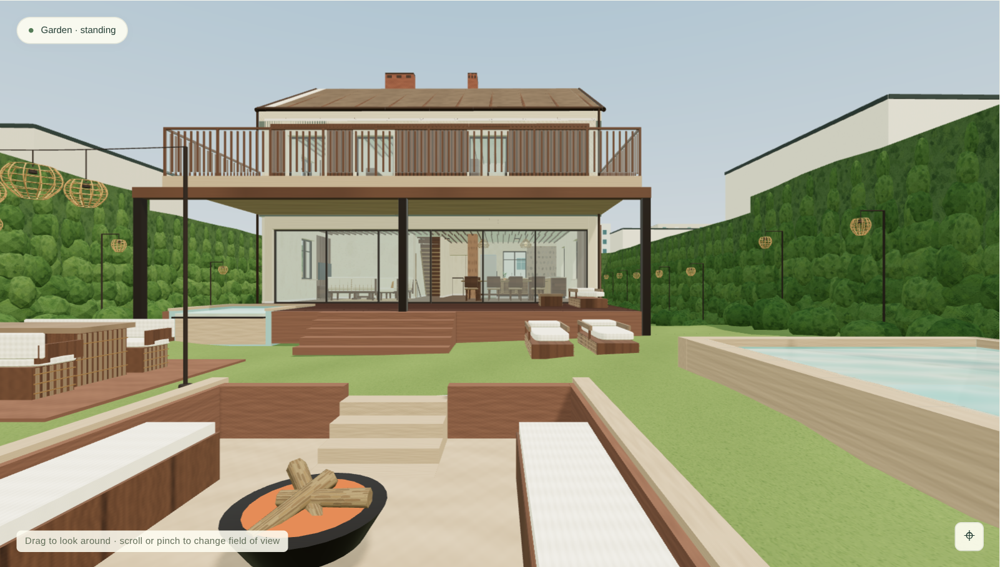
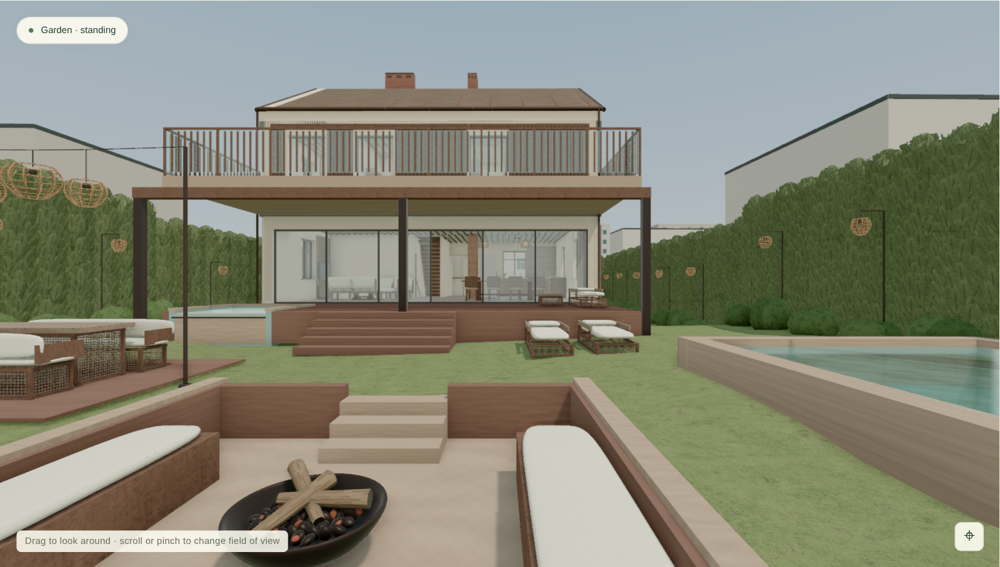
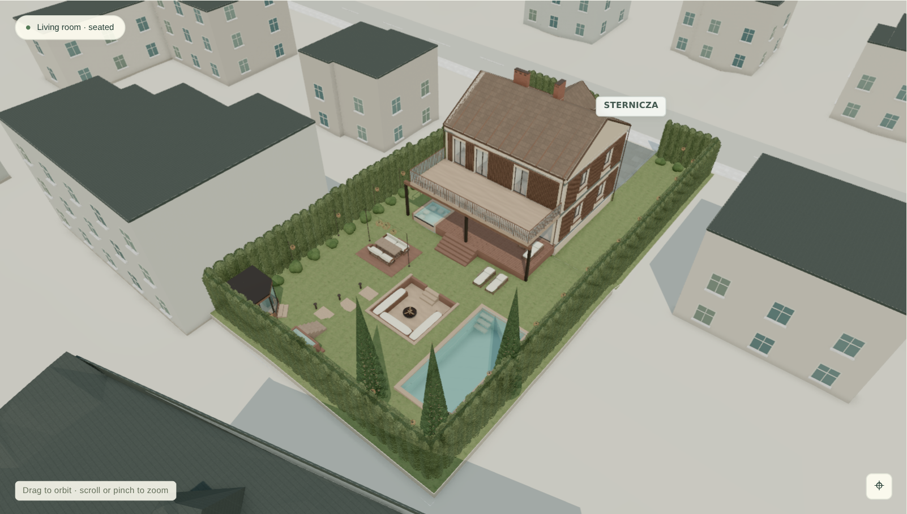
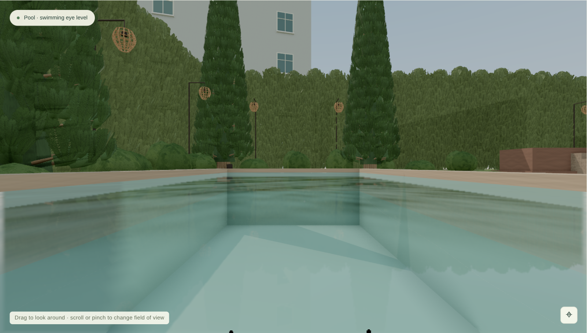
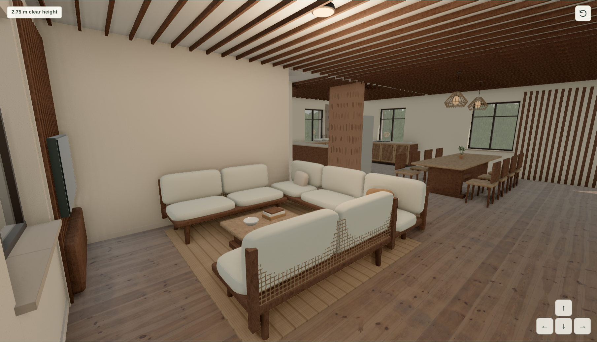
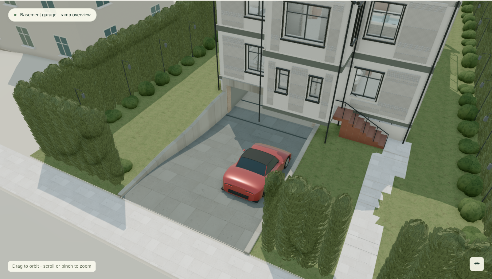

- Version
- 1.29.0
- Saved-state version
- 28
- Unit checks
- 686
Validation passed: All seven CI jobs completed successfully, including the final studio browser checks. See validation.json for exact run results.
Matched garden view
Bali style, looking from the garden toward the house.




Additional views
Overview, water, interior and garage access from the same validation run.








How to read these images
These real-time browser renders improve surface and model detail, but do not achieve 100% photorealism. Representative photographic material maps illustrate proposed finishes; they are not photographs or verified specifications of installed materials. Close foliage still shows repeated cards and branches, surrounding buildings remain simplified, exterior lighting is comparatively even, and pool reflections can form visible horizontal bands. Read these images as design previews. The source changes and validation data document what was implemented and checked.